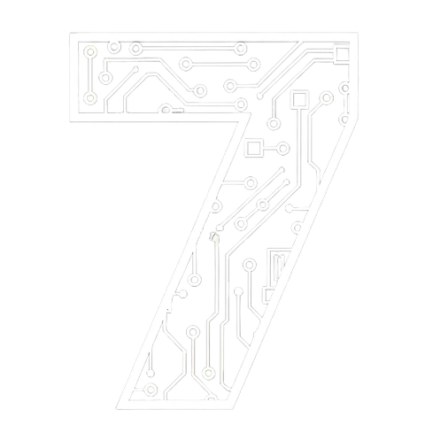
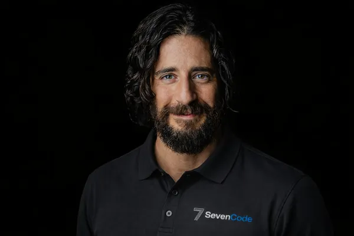
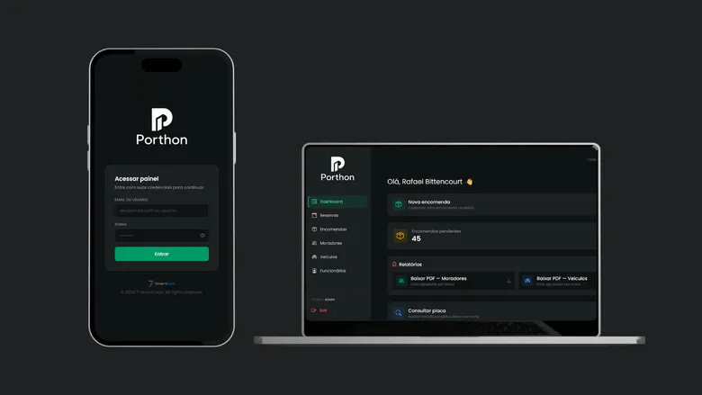
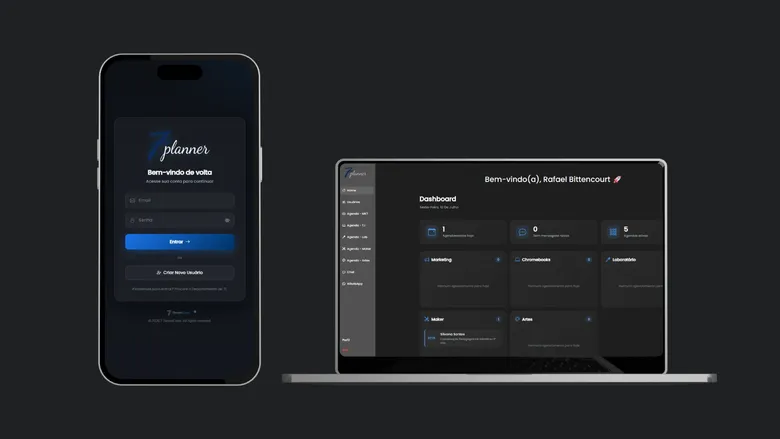
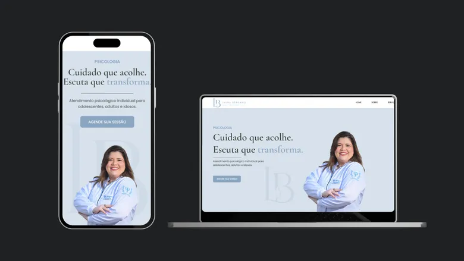

Rafael Bittencourt
Desenvolvedor FullStack
CEO

Fundada por Rafael Bittencourt, a SevenCode nasceu com o propósito de transformar ideias complexas em soluções digitais de alto impacto. Somos uma software house focada no desenvolvimento sob medida, especializada na criação de sites institucionais modernos, sistemas web robustos e e-commerces de alta conversão. Unindo tecnologia de ponta, design minimalista e uma arquitetura de código impecável, entregamos plataformas que não apenas cumprem sua função técnica, mas impulsionam o crescimento real e a eficiência operacional dos nossos clientes.
O time por trás da 7 SevenCode
Desenvolvedor FullStack
CEO
Desenvolvedor FullStack
SócioReais Desenvolvidos pela 7 SevenCode

Sistema integrado de gestão condominial desenvolvido para centralizar o fluxo de encomendas e o controle de moradores, veículos e funcionários. O software está ativo e homologado no condomínio Ventos do Sul, enquanto novas funcionalidades são implementadas para prepará-lo para expansão e distribuição em outros condomínios.

Plataforma de gestão de recursos e agendamentos institucionais. Controla as demandas de marketing, reservas de Chromebooks e o uso de laboratórios e salas de arte. Inclui também um módulo de chat ao vivo para suporte em tempo real integrado com a equipe de T.I. do colégio.

Site institucional desenvolvido sob medida para a Psicóloga Laura Bergamo. O projeto une uma experiência do usuário (UX) fluida a uma identidade visual personalizada com a paleta de cores da marca, além de aplicar técnicas avançadas de SEO para garantir um excelente posicionamento orgânico no Google.
Tudo que você precisa saber antes de começar
Cada projeto é sob medida, então o valor depende do escopo. Fazemos um orçamento gratuito e sem compromisso após entender a sua necessidade — é só chamar no WhatsApp.
Depende da complexidade. Um site institucional costuma levar algumas semanas; sistemas e e-commerces variam conforme as funcionalidades. Definimos prazos claros antes de iniciar.
Sim. Somos uma software house focada em desenvolvimento sob medida: sites, sistemas web, e-commerces e software para necessidades específicas do seu negócio.
Desenvolvemos com código próprio, o que garante desempenho, segurança e liberdade total para evoluir o projeto sem amarras de plataformas fechadas.
Sim, atendemos de forma remota clientes de qualquer lugar do Brasil.
Seu projeto merece uma equipe que entenda seu negócio